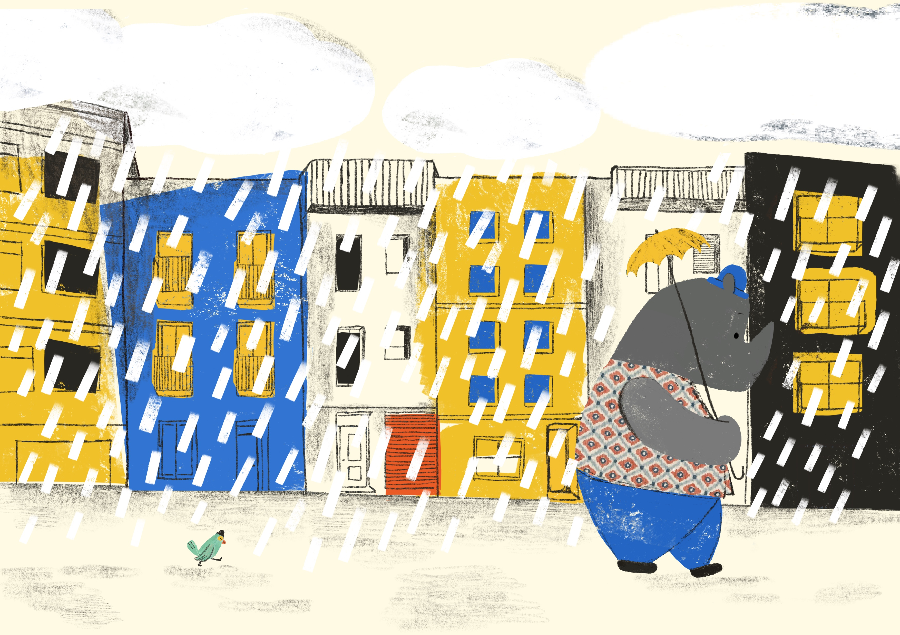
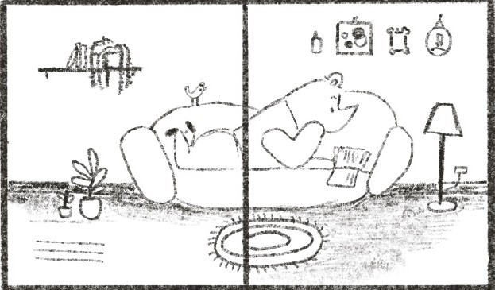

Da una frase
Tutto è cominciato con una telefonata e con un modo insolito di dire: «Mi manchi».

Albo illustrato
Mi manchi una balena quando sei lontano, lontanissimo, perché ho paura che non torni più.
Inseparabili... o quasi. Protagonisti di questo albo un rinoceronte e una bufaga, il caratteristico uccellino dal becco rosso che se ne sta appollaiato sul corno del mammifero. Una coppia irresistibile e improbabile al tempo stesso. A cominciare dall'aspetto e dalle dimensioni contrastanti: imponente e grigio lui, piccola e colorata lei. I due differiscono anche nel carattere: l'uccellino è esuberante, ha sempre voglia di giocare, fa le smorfie, cerca le coccole. Ha l'argento vivo addosso e tutta l'energia tipica dell'infanzia. Il rinoceronte, invece, è più posato, meno espansivo. Ha giornate molto piene e non dedica alla sua amica pennuta tutte le attenzioni di cui lei avrebbe voglia. La bufaga vorrebbe stare vicina al rinoceronte ogni istante e quando comincia a sentire la sua mancanza... ha proprio bisogno di dirglielo! Dal moscerino alla balena, la dimensione degli animali diventa l'unità di misura per dire "mi manchi" a chi vogliamo bene.
Acquisto su Amazon. I collegamenti esterni si aprono in una nuova scheda.
Questo libro nasce da una telefonata.
«Mi manchi una balena», ho detto per scherzo a una persona a cui volevo bene. Mi sembrava un modo buffo e smisurato per dire che mi mancava tanto.
Da quella frase è nata una storia sulla mancanza e sull'affetto, su quando qualcuno è lontano e vorremmo averlo vicino. Perché a volte le distanze sembrano enormi e abbiamo paura che chi amiamo non torni più.
Nel libro, la bufaga cerca un modo per raccontare al rinoceronte quanto le manca. E così, dal moscerino alla balena, gli animali diventano un'unità di misura immaginaria per dire qualcosa che in fondo non si può misurare: quanto bene vogliamo a qualcuno.
Tutto è cominciato con una telefonata e con un modo insolito di dire: «Mi manchi».

Le prime illustrazioni realizzate da Arianna Alessi durante il lavoro sul libro.

Nelle prime versioni della storia compariva anche un beluga. Non è arrivato fino alla versione finale, ma continua a nuotare tra gli appunti.